건축산업기사 (2013-08-18 기출문제)
1과목: 건축계획
1. 공동주택을 건설하는 주택단지의 부대시설에 관한 설명으로 옳지 않은 것은?
- 주택단지 안의 어린이놀이터 및 도로에는 보안등을 설치하여야 한다.
- 관리사무소는 관리업무의 효율성과 입주민의 접근성 등을 고려하여 배치하여야 한다.
- 주택단지의 총 세대수가 300세대 미만인 경우 진입도로의 폭은 최소 10m 이상으로 한다.
- 조경을 하고자 하는 부분의 지하에 주차장 등 지하 구조물을 설치하는 경우에는 식재에 지장이 없도록 두께 0.9m 이상의 토층을 조성하여야 한다.
(정답률: 77%)

2. 사무소 건축의 엘리베이터 배치에 관한 설명으로 옳지 않은 것은?
- 교통동선의 중심에 설치하여 보행거리가 짧도록 배치한다.
- 여러 대의 엘리베이터를 설치하는 경우, 그룹별 배치와 군관리운전 방식으로 한다.
- 일렬 배치는 6대를 한도로 하고, 엘리베이터 중심 간 거리는 10m 이하가 되도록 한다.
- 엘리베이터 수량은 이용자가 집중하는 경우를 기준하여 수송능력, 대기시간 등을 기준 값 이내로 한다.
(정답률: 81%)
3. 테라스 하우스에 관한 설명으로 옳은 것은?
- 중정을 아트리움으로 구성하는 관계로 아트리움 주택이라고도 한다.
- 연속주택이라고도 하며, 도로를 중심으로 상향식과 하향식으로 구분할 수 있다.
- 타운 하우스라고도 하며, 1층은 생활공간, 2층은 수면공간의 배치가 일반적이다.
- 평지에서는 건설이 불가능하며, 경사가 심할수록 더 많은 세대를 수용할 수 있다.
(정답률: 68%)
4. 1주간의 평균 수업시간이 35시간인 어느 학교에서 제도실이 사용되는 시간이 1주에 28시간이며, 이 중 10시간은 구조 강의를 위해 사용된다면, 제도실의 이용률과 순수율은 각각 얼마인가?
- 이용률 : 80%, 순수율 : 35.7%
- 이용률 : 80%, 순수율 : 64.3%
- 이용률 : 51.4%, 순수율 : 35.7%
- 이용률 : 51.4%, 순수율 : 64.3%
(정답률: 82%)
5. 주택 식당의 배치유형 중 다이닝 키친(DK형)에 관한 설명으로 옳은 것은?
- 대규모 주택에 적합한 유형으로 쾌적한 식당의 구성이 용이하다.
- 싱크대와 식탁의 거리가 멀어지는 관계로 주부의 동선이 길다는 단점이 있다.
- 부엌의 일부에 간단한 식탁을 설치하거나 식당과 부엌을 하나로 구성한 형태이다.
- 거실과 식당이 하나로 된 형태로 식사 분위기의 연출이 용이하다.
(정답률: 90%)
6. 사무소 건축의 기준층 층고의 결정요인과 가장 관계가 먼 것은?
- 채광
- 사무실의 깊이
- 엘리베이터 설치 대수
- 공기조화(Air conditioning)
(정답률: 88%)
7. 학교의 교사배치형식 중 폐쇄형에 관한 설명으로 옳지 않은 것은?
- 일조, 통풍 등의 환경적 조건이 불리하다.
- 교사 주변에 활용되지 않는 부분이 발생한다.
- 별도의 피난통로를 만들지 않으면 화재 및 비상시에 불리하다.
- 일종의 핑거 플랜으로 구조계획이 간단하고 규격형의 이용도 편리하다.
(정답률: 80%)
8. 초등학교 저학년에 대해 가장 권장되는 학교운영방식은?
- 달톤형
- 플래툰형
- 교과교실형
- 종합교실형
(정답률: 87%)
9. 한식주택과 양식주택에 관한 설명으로 옳지 않은 것은?
- 한식주택은 공간의 융통성이 높고 양식주택은 공간의 독립성이 높다.
- 한식주택의 가구는 부차적 존재이며, 양식주택의 가구는 중요한 내용물이다.
- 한식주택의 평면구성은 폐쇄적ㆍ집중식이고, 양식주택은 개방적ㆍ분산식이다.
- 한식주택의 평면은 실의 조합으로 되어 있으며, 양식주택은 실의 분화로 되어 있다.
(정답률: 73%)
10. 다음 설명에 알맞은 상점의 가구 배치유형은?
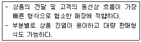
- 굴절형
- 직렬형
- 환상형
- 복합형
(정답률: 88%)
11. 상점 내의 계단 계획에 관한 설명으로 옳지 않은 것은?
- 매장 중앙에 계단을 위치시키면 동선을 자연스럽게 분할할 수 있다.
- 소규모 상점은 계단의 경사를 낮게 할수록 매장면적의 효율성이 증가한다.
- 계단의 경사는 상점의 매장면적과 관련이 있으므로 규모에 적합한 경사도를 설정하는 것이 중요하다.
- 상점의 평면이 깊이가 깊은 직사각형인 경우 측벽에 따라 계단을 설치하는 것이 시각적, 공간적 측면에서 바람직하다.
(정답률: 78%)
12. 상점 매장의 가구 배치 상 고려해야 할 사항으로 옳지 않은 것은?
- 손님 쪽에서 상품이 효과적으로 보이도록 한다.
- 감시하기 쉽고 손님에게 감시한다는 인상을 주지 않게 한다.
- 들어오는 손님과 종업원의 시선이 직접 마주치게 하여 친근감을 갖게 한다.
- 동선이 원활하여 다수의 손님을 수용하고 소수의 종업원으로 관리하게 한다.
(정답률: 85%)
13. 백화점의 에스컬레이터 계획에 관한 설명으로 옳지 않은 것은?
- 건축적 점유면적이 가능한 한 작게 배치한다.
- 승객의 보행거리가 가능한 한 짧게 되도록 한다.
- 복렬형은 대형 백화점에서 가장 많이 채용되는 배열 방법이다.
- 출발 기준층에서 쉽게 눈에 띄도록 하고 보행동선 흐름의 중심에 설치한다.
(정답률: 63%)
14. 숑바르 드 로브(Chombard de lawve)에 따른 1인당 주거 면적의 한계기준은?
- 8m2
- 10m2
- 14m2
- 16m2
(정답률: 79%)
15. 다음 설명에 알맞은 공장 건축의 레이아웃 형식은?
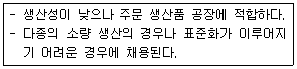
- 고정식 레이아웃
- 혼성식 레이아웃
- 공정 중심의 레이아웃
- 제품 중심의 레이아웃
(정답률: 82%)
16. 사무소 건축의 실 단위계획 중 개방식 배치에 관한 설명으로 옳지 않은 것은?
- 독립성과 쾌적감의 이점이 있다.
- 전면적을 유용하게 이용할 수 있다.
- 개실 시스템보다 공사비가 저렴하다.
- 오피스 랜드스케이핑은 개방식 배치의 한 형식이다.
(정답률: 78%)
17. 다음 중 방적공장을 무창공장으로 설계하는 이유와 가장 거리가 먼 것은?
- 온, 습도 조정의 유지비가 싸다.
- 조도를 일정하게 하는 데 유리하다.
- 유창공장에 비하여 건설비가 싸다.
- 공장 내의 소음 발생을 저하시킨다.
(정답률: 83%)
18. 공동주택의 단면 형식 중 스킵플로어형에 관한 설명으로 옳지 않은 것은?
- 소규모의 주거 형식에는 비경제적이다.
- 프라이버시 확보가 용이하며 전용면적비가 크다.
- 세대 평면 유형의 다양화가 불가능하여 입면이 획일화된다는 단점이 있다.
- 엑세스(Access) 동선이 복잡한 관계로 설비나 구조적인 측면에서 면밀한 검토가 요구된다.
(정답률: 72%)
19. 주택단지 안의 건축물에 설치하는 난간의 간살의 간격은 최대 얼마 이하로 하여야 하는가?(단, 안목치수)
- 10cm
- 15cm
- 20cm
- 30cm
(정답률: 43%)
20. 사무소 건축의 코어 유형 중 편심형 코어에 관한 설명으로 옳은 것은?
- 구조적으로 가장 바람직한 유형이다.
- 기준층 바닥면적이 작은 경우에 적합한 유형이다.
- 2방향 피난에 이상적인 관계로 방재상 유리한 유형이다.
- 코어를 업무공간에서 별도로 분리, 독립시킨 유형으로 분리코어라고도 한다.
(정답률: 67%)
2과목: 건축시공
21. 다음 공정표에서 종속 관계에 대한 설명으로 옳지 않은 것은?
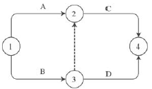
- C는 A작업에 종속된다.
- C는 B작업에 종속된다.
- D는 A작업에 종속된다.
- D는 B작업에 종속된다.
(정답률: 84%)
22. 양중 기계 중 이동식 크레인에 해당되는 것은?
- 타워크레인
- 러핑크레인
- 크롤러크레인
- 지브크레인
(정답률: 77%)
23. 목재의 변재와 심재에 대한 설명으로 옳지 않은 것은?
- 심재는 변재보다 비중이 크다.
- 심재는 변재보다 신축이 작다.
- 변재는 심재보다 내후성이 크다.
- 변재는 심재보다 강도가 약하다.
(정답률: 83%)
24. 턴키계약 방식에 대한 설명으로 옳은 것은?
- 설계와 시공이 동일 조직에 의해 수행됨으로써 공사기간 중 신공법, 신기술의 적용이 가능하다.
- 발주자와 수급자가 상호 신뢰를 바탕으로 팀을 구성해서 공동으로 프로젝트를 집행, 관리하는 방식이다.
- 2명 이상의 도급업자가 특정한 공사에 관하여 체결한 협정서를 바탕으로 공동 기업체를 만들어 협동하여 공사를 시행하는 방법이다.
- 전문적인 공사를 일반 도급공사에 포함시키지 않고 분할하여 직접 전문업자에게 도급을 주는 방식이다.
(정답률: 64%)
25. 콘크리트 이어 붓기에 대한 설명 중 옳지 않은 것은?
- 아치이음은 아치(Arch) 축에 직각으로 한다.
- 이어 붓는 위치는 응력이 작은 곳을 택한다.
- 보의 이음은 보의 단부, 즉 기둥 옆에서 이음을 한다.
- 수평이음은 그 면의 먼지나 레이턴스를 제거하고 이음콘크리트를 친다.
(정답률: 64%)
26. 콘크리트에 관한 설명으로 옳지 않은 것은?
- 콘크리트의 강도는 물-시멘트비의 영향을 크게 받는다.
- 일정한 물-시멘트비의 콘크리트에 공기연행제를 넣으면 워커빌리티를 증진시키는 이점이 있다.
- 콘크리트는 알칼리성이므로 철근콘크리트로 할 때 철근을 방청하는 효과가 있다.
- 콘크리트는 화재에 있어서 결정수를 방출할 뿐이므로 장시간 고온에서도 강도 저하가 없다.
(정답률: 69%)
27. 지하 외벽 및 지하 내부 기둥을 선시공한 후 지상 및 지하 구조 물공사와 터파기공사를 동시에 실시하는 공법은?
- 역구축공법(Top down method)
- 트렌치컷공법(Trench cut method)
- 아일랜드공법(Island method)
- 오픈컷공법(Open cut method)
(정답률: 52%)
28. 공장에서 가공 또는 조립을 완료한 철골 부재에 대하여 녹막이 칠을 하여야 할 곳은?
- 조립에 의하여 맞닿는 면
- 콘크리트에 매입되지 않는 부분
- 현장 용접하는 부분
- 고장력볼트 마찰접합부의 마찰면
(정답률: 78%)
29. 계단에서 미끄럼막이(Non slip) 철물은 어느 부위에 설치하는가?
- 계단의 디딤판
- 계단의 참
- 계단의 옆판
- 계단의 난간
(정답률: 90%)
30. 기초말뚝박기공사에서 기성콘크리트말뚝 간격의 최소 한도로 옳은 것은?(단, d는 말뚝머리 지름임.)
- 4d
- 3d
- 2.5d
- 2d
(정답률: 84%)
31. 아스팔트방수에서 아스팔트 프라이머를 사용하는 목적으로 옳은 것은?
- 방수층의 습기를 제거하기 위하여
- 아스팔트 보호누름을 시공하기 위하여
- 보수 시 불량 및 하자 위치를 쉽게 발견하기 위하여
- 콘크리트 바탕과 방수시트의 접착을 양호하게 하기 위하여
(정답률: 76%)
32. 철골 구조물에서 피난에 필요한 일정시간 동안 철골재의 온도가 상승하지 않도록 하는 내화피복공법이 아닌 것은?
- 락울뿜칠공법
- 방청처리공법
- ALC판붙이기공법
- 타설공법
(정답률: 48%)
33. 건설원가의 구성 체계에서 직접공사비를 구성하는 주요 요소와 가장 거리가 먼 것은?
- 자재비
- 노무비
- 외주비
- 현장관리비
(정답률: 80%)
34. AE 콘크리트에 관한 설명 중 옳지 않은 것은?
- AE 콘크리트는 무수한 기포를 발생시켜 볼베어링 역할을 하도록 하여 시공연도를 증진시키는 콘크리트이다.
- 공기량이 6% 이상 초과하면 강도는 급격히 저하한다.
- 단위수량이 적게 들고, 수밀성이 향상되며, 경화에 따른 발열량이 증대된다.
- 철근과의 부착강도는 적어지지만 내구성 향상, 동결융해 저항성 향상 등의 효과가 있다.
(정답률: 57%)
35. 석재의 특성에 대한 설명으로 옳지 않은 것은?
- 비중이 크고 가공성이 좋지 않은 편이다.
- 석재는 인장 및 전단강도가 크므로 큰 인장력을 받는 장소에 사용한다.
- 장대재를 얻기 어려우므로 가구재로는 적당하지 않다.
- 내수성, 내구성, 내화학성이 풍부하다.
(정답률: 77%)
36. 철골구조에서 철골 ton당 도장 소요면적으로 옳은 것은?(단, 보통구조일 경우)
- 15~32m2
- 33~50m2
- 51~65m2
- 65~70m2
(정답률: 61%)
37. 가설건축물에 대한 설명으로 옳지 않은 것은?
- 하도급자 사무실은 후속 공정에 지장이 없는 현장사무실과 가까운 곳에 둔다.
- 시멘트창고는 통풍이 되지 않도록 출입구 외에는 개구부 설치를 금한다.
- 인화성 재료 저장소는 벽, 지붕, 천장의 재료를 방화구조 또는 불연 구조로 하고 소화설비를 갖춘다.
- 변전소의 위치는 안전상 현장사무실에서 최대한 멀리 떨어진 곳에 배치한다.
(정답률: 75%)
38. 석재를 인력에 의해 가공할 때 돌의 표면을 망치(쇠메)로 대강 다듬는 것을 무엇이라 하는가?
- 혹두기
- 정다듬
- 도드락다듬
- 날망치다듬
(정답률: 62%)
39. 표준형 시멘트벽돌 1.5B 두께로 가로 15m, 세로 3m를 쌓을 때 벽돌의 소요량과 쌓기모르타르량을 구하면?(단, 벽돌의 할증률은 5%임.)
- 벽돌 소요량 : 10,584매, 쌓기모르타르량 : 3.30m3
- 벽돌 소요량 : 10,584매, 쌓기모르타르량 : 3.53m3
- 벽돌 소요량 : 10,855매, 쌓기모르타르량 : 3.30m3
- 벽돌 소요량 : 10,855매, 쌓기모르타르량 : 3.53m3
(정답률: 51%)
40. 철골공사의 용접 시공 시 주의사항으로 옳지 않은 것은?
- 용접 전에 용접 모재 표면의 기름, 톡 등 용접에 지장을 주는 불순물을 제거하여야 한다.
- 수축량이 가장 작은 부분부터 최초로 용접하고 수축량이 큰 부분일수록 나중에 용접한다.
- 눈이나 비로 모재 표면이 젖었을 때는 용접 작업을 금한다.
- 감전 방지를 위해 안전홀더를 사용하고, 전격방지장치가 부착된 용접기를 사용한다.
(정답률: 89%)
3과목: 건축구조
41. 단면적이 1,000mm2이고, 길이는 2m인 균질한 재료로 된 철근에 재축방향으로 100kN의 인장력을 작용시켰을 때 늘어난 길이는?(단, 탄성계수는 2.0×105MPa)
- 1mm
- 0.1mm
- 0.01mm
- 0.001mm
(정답률: 55%)
42. 그림과 같은 구조물의 판별은?
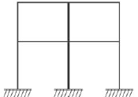
- 10차 부정정
- 12차 부정정
- 14차 부정정
- 16차 부정정
(정답률: 78%)
43. 강도설계법에서 압축 이형철근 D22의 기본정착길이는?(단, D22 철근의 단면적은 387mm2, 콘크리트의 압축강도는 24MPa, 철근의 항복강도는 400MPa, 경량콘크리트계수는 1)
- 400mm
- 450mm
- 500mm
- 550mm
(정답률: 62%)
44. 철근콘크리트보에서 스팬 8m, 슬래브 중심 간 거리 4.0m, 보의 폭은 400mm, 슬래브 두께가 150mm일 때 T형 보의 유효폭을 구하면?
- 2,000mm
- 2,800mm
- 4,000mm
- 4,200mm
(정답률: 50%)
45. 그림과 같은 캔틸레버보에서 C점의 전단력(VC)과 D점의 휨모멘트(MD)를 구하면?
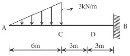
- VC=-6kN, MD=-30kNㆍm
- VC=-6kN, MD=-45kNㆍm
- VC=-9kN, MD=-30kNㆍm
- VC=-9kN, MD=-45kNㆍm
(정답률: 44%)
46. 건축물의 구조계획에서 구조체 자중의 감소에 따른 이점이 아닌 것은?
- 풍하중에 대한 건물의 전도 방지
- 기둥 축력의 감소에 따른 기둥의 단면 감소
- 휨재 설계 시 장스팬이 가능
- 경제적인 기초설계
(정답률: 70%)
47. 강도설계법에서 처짐을 계산하지 않는 경우 스팬 L=8m인 단순지지 콘크리트보의 최소 두께는?
- 400mm
- 450mm
- 500mm
- 550mm
(정답률: 59%)
48. 그림과 같은 단면의 X축에 대한 단면1차모멘트는?
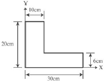
- 2,160cm3
- 2,260cm3
- 2,360cm3
- 2,460cm3
(정답률: 50%)
49. 기성콘크리트말뚝을 사용하는 기초에서 말뚝머리지름이 400mm인 경우, 말뚝중심 간 최소간격은 얼마인가?(단, KBC2009 기준)
- 800mm
- 1,000mm
- 1,200mm
- 1,400mm
(정답률: 62%)
50. 그림과 같은 양단고정보(Fixed beam)의 중앙과 단부의 휨모멘트 비율은?
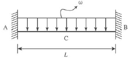
- 1:1
- 1:2
- 1:3
- 1:4
(정답률: 58%)
51. 휨을 받는 보에서 보의 곡률반경 ρ, 휨모멘트 M, 단면2차모멘트 I, 가로방향의 탄성계수를 E라 할 때 관계식으로 옳은 것은?
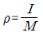
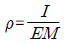
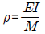
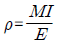
(정답률: 60%)
52. 강도설계법에 의한 철근콘크리트 단근 장방형 보의 휨 설계시 등가응력블록의 깊이 a를 구하는 식은?(단, b는 보의 폭)
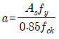
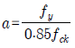
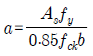
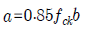
(정답률: 72%)
53. 플랫슬래브구조에 대한 설명 중 옳지 않은 것은?
- 건물 내부에는 보 없이 바닥판만으로 구성하고 그 하중은 직접 기둥에 전달한다.
- 바닥의 주근은 1방향으로 배근한다.
- 구조가 간단하고 실내 이용률이 높다.
- 드롭패널(Drop panel)이나 주두(Column capital)로 보강되는 구조이다.
(정답률: 56%)
54. 콘크리트 단순보의 단부에서 큰 전단력과 작은 모멘트가 발생 함으로서 일어나는 균열의 형태는?
- 크리프균열
- 수직균열
- 휨균열
- 사인장균열
(정답률: 53%)
55. 그림과 같은 트러스의 U, V, L부재의 부재력은 각각 몇 kN인가?(단, -는 압축력, +는 인장력)
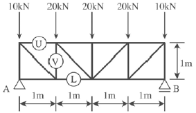
- U=-30kN, L=30kN, V=-30kN
- U=30kN, L=30kN, V=30kN
- U=-30kN, L=-30kN, V=30kN
- U=30kN, L=-30kN, V=-30kN
(정답률: 50%)
56. 옹벽 설계 시 고려해야 할 하중과 가장 거리가 먼 것은?
- 풍하중
- 지진하중
- 토압
- 수압
(정답률: 56%)
57. 다음 그림과 같은 기둥에서 유효좌굴길이(LK)는?
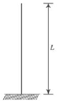
- 0.5
- 0.7
- 1.0
- 2.0
(정답률: 51%)
58. 그림과 같은 직사각형 단면의 핵(核)영역으로 옳은 것은?
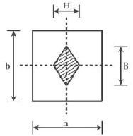
- H=h/6, B=b/6
- H=h/6, B=b/3
- H=h/3, B=b/6
- H=h/3, B=b/3
(정답률: 57%)
59. 그림과 같이 보의 중앙부에 집중하중이 작용할 때 최대휨응력도의 크기는?
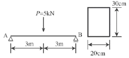
- 2.0MPa
- 2.5MPa
- 3.0MPa
- 3.5MPa
(정답률: 57%)
60. 스팬(Span)이 6m, 단면의 폭 150mm, 춤 400mm인 단순보가 목재보일 경우 여기에 적재할 수 있는 허용등분포하중은?(단, 목재보의 허용휨응력도 fb=10MPa이다.)
- 6.9kN/m
- 7.9kN/m
- 8.9kN/m
- 9.9kN/m
(정답률: 49%)
4과목: 건축설비
61. 4℃의 물 1,000L를 100℃로 가열할 경우 온도변화에 따른 체적 팽창량은?(단, 4℃ 물의 밀도는 1kg/L이고, 100℃ 물의 밀도는 0.958kg/L이다.)
- 약 15L
- 약 25L
- 약 35L
- 약 44L
(정답률: 37%)
62. 보일러의 출력 중 상용출력의 구성에 속하지 않는 것은?
- 난방부하
- 급탕부하
- 예열부하
- 배관부하
(정답률: 72%)
63. 습공기선도상에 다음과 같이 나타나는 상태변화과정은?
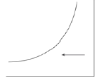
- 가열
- 냉각
- 가습
- 감습
(정답률: 66%)
64. 펌프의 회전수를 2배로 증가시켰을 때, 펌프 양정의 변화는?
- 1/2로 감소
- 2배 증가
- 4배 증가
- 8배 증가
(정답률: 64%)
65. 중간기 또는 동계에 발생하는 냉방부하를 실내 엔탈피보다 낮은 도입외기에 의하여 제거 또는 감소시키는 시스템은?
- 축열, 축냉시스템
- 이코노마이저시스템
- 빙축열식 냉방시스템
- 잠열축열식 냉방시스템
(정답률: 53%)
66. 가스설비에 관한 설명으로 옳지 않은 것은?
- 저압은 일반적으로 0.1MPa 미만의 압력을 말한다.
- 가스계량기와 전기점멸기는 30cm 이상의 거리를 유지하여야 한다.
- 가스계량기와 전기계량기는 60cm 이상의 거리를 유지하여야 한다.
- 가스공급방식 중 저압공급은 다량의 가스를 원거리에 수송할 경우에 주로 사용된다.
(정답률: 55%)
67. 급수설비에서 크로스 커넥션에 따른 수질오염의 방지방법으로 가장 적절한 것은?(오류 신고가 접수된 문제입니다. 반드시 정답과 해설을 확인하시기 바랍니다.)
- 토수구 공간을 설치한다.
- 차광선 FRP 재질의 고가탱크를 설치한다.
- 버큠 브레이커나 역류방지장치를 부착한다.
- 각 계통마다의 배관을 색깔별로 구분하여 오접합을 방지한다.
(정답률: 47%)
68. 배관에 사용되는 신축이음쇠에 속하지 않는 것은?
- 루프형
- 플랜지형
- 슬리브형
- 벨로즈형
(정답률: 47%)
69. 전기설비가 어느 정도 유효하게 사용되는가를 나타내는 것은?
- 부하율
- 부등률
- 수용률
- 여유율
(정답률: 47%)
70. 관경이 100mm인 주택의 급수관 내에 15L/sec의 물이 흐를 때 관내 유속은?
- 1.5m/sec
- 1.9m/sec
- 2.4m/sec
- 2.8m/sec
(정답률: 35%)
71. 냉방부하 계산 시 현열과 잠열을 모두 고려하여야 하는 부하의 종류에 속하지 않는 것은?
- 인체의 발생열
- 벽체로부터의 취득열
- 극간풍에 의한 취득열
- 외기의 도입으로 인한 취득열
(정답률: 44%)
72. 복사난방에 관한 설명으로 옳지 않은 것은?
- 열용량이 작아 간헐난방에 적합하다.
- 매립코일이 고장나면 수리가 어렵다.
- 외기침입이 있는 곳에서도 난방감을 얻을 수 있다.
- 실내에 방열기를 설치하지 않으므로 바닥을 유용하게 이용할 수 있다.
(정답률: 68%)
73. 220V, 400W 전열기를 110V에서 사용하였을 경우 소비전력 W는?
- 50W
- 100W
- 200W
- 400W
(정답률: 57%)
74. 자동화재탐지설비의 수신기의 종류에 속하지 않는 것은?
- P형 수신기
- R형 수신기
- M형 수신기
- B형 수신기
(정답률: 75%)
75. 배수, 통기계통 간의 공기의 유통을 원활히 하기 위해 설치하는 통기관으로, 루프통기의 효과를 높이는 역할도 하는 것은?
- 습식통기관
- 도피통기관
- 각개통기관
- 공용통기관
(정답률: 70%)
76. 증기난방설비에서 방열기나 증기코일 및 배관 내에 공기가 고였을 경우에 관한 설명으로 옳지 않은 것은?
- 증기나 응축수의 흐름을 방해한다.
- 장치 내에 있는 공기가 열전달을 저하시켜 예열이 지연된다.
- 방열기나 증기코일의 내벽면에 공기막을 형성하여 전열을 저해한다.
- 공기의 분압만큼 증기의 실질압력이 높아져 증기의 온도가 내려간다.
(정답률: 58%)
77. 급수방식 중 고가탱크방식에 관한 설명으로 옳지 않은 것은?
- 급수압력의 변화가 심하다.
- 하향 급수배관 방식이 사용된다.
- 단수 시에도 일정량의 급수가 가능하다.
- 물탱크에서 물이 오염될 가능성이 있다.
(정답률: 62%)
78. 키르히호프의 제1법칙을 가장 올바르게 표현한 것은?
- 회로 내의 임의의 한 점에 들어오고 나가는 전류의 합은 같다.
- 임의의 폐회로 내에서의 기전력과 전압강하의 대수의 합은 같다.
- 도체가 움직이는 방향을 알 수 있는 법칙으로 전동기에 적용되는 법칙이다.
- 회로의 저항에 흐르는 전류의 크기는 인가된 전압의 크기에 비례하며 저항과는 반비례한다.
(정답률: 38%)
79. 피보호물을 연속된 망상도체나 금속판으로 싸는 방법으로 뇌격을 받더라도 내부에 전위차가 발생하지 않으므로 건물이나 내부에 있는 사람에게 위해를 주지 않는 피뢰설비 방식은?
- 돌침방식(보통보호)
- 가공지선방식(간이보호)
- 케이지방식(완전보호)
- 수평도체방식(증강보호)
(정답률: 81%)
80. 해당 특정소방대상물에 설치된 2개의 옥외소화전을 동시에 사용할 경우 각 옥외소화전의 노즐선단에서의 방수압력은 최소 얼마이상이어야 하는가?(단, 전동기 또는 내연기관에 따른 펌프를 이용하는 가압송수장치를 사용할 경우)
- 0.07MPa
- 0.17MPa
- 0.25MPa
- 0.34MPa
(정답률: 46%)
5과목: 건축관계법규
81. 건축법에 따른 제1종근린생활시설로서 당해 용도에 쓰이는 바닥면적의 합계가 최대 얼마 미만인 경우 제2종전용주거지역 안에서 건축할 수 있는가?
- 500m2
- 1,000m2
- 1,500m2
- 2,000m2
(정답률: 58%)
82. 대형 기계식주차장에 있어서 출입구 전면에 확보하여야 할 전면공지의 크기기준으로 옳은 것은?
- 너비 8.1미터 이상, 길이 9.5미터 이상
- 너비 8.7미터 이상, 길이 9.8미터 이상
- 너비 10미터 이상, 길이 11미터 이상
- 너비 10.3미터 이상, 길이 11미터 이상
(정답률: 75%)
83. 다음은 대지와 도로의 관계에 관한 기준 내용이다. ( ) 안에 알맞은 것은?(단, 건축조례로 정하는 규모의 건축물은 제외)
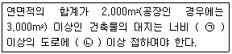
- ㉠ 2m, ㉡ 4m
- ㉠ 4m, ㉡ 2m
- ㉠ 4m, ㉡ 6m
- ㉠ 6m, ㉡ 4m
(정답률: 50%)
84. 지하식 노외주차장의 차로에 관한 기준 내용으로 옳지 않은 것은?
- 경사로의 노면은 거친 면으로 하여야 한다.
- 높이는 주차바닥면으로부터 2.3m 이상으로 하여야 한다.
- 경사로의 종단경사도는 직선부분에서는 14%를 초과하여서는 안된다.
- 주차대수 규모가 50대 이상인 경우의 경사로는 너비 6m 이상인 2차로를 확보하거나 진입차로와 진출차로를 분리하여야 한다.
(정답률: 79%)
85. 다음은 창문 등의 차면시설에 관한 기준 내용이다. ( ) 안에 알맞은 것은?
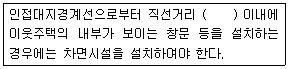
- 1m
- 2m
- 3m
- 5m
(정답률: 81%)
86. 거실의 반자높이를 최소 4m 이상으로 하여야 하는 대상에 속하지 않는 것은?(단, 기계환기장치를 설치하지 않은 경우)
- 종교시설의 용도에 쓰이는 건축물의 집회실로서 그 바닥면적이 200m2 이상인 것
- 장례시설의 용도에 쓰이는 건축물의 집회실로서 그 바닥면적이 200m2 이상인 것
- 위락시설 중 유흥주점의 용도에 쓰이는 건축물의 집회실로서 그 바닥면적이 200m2 이상인 것
- 문화 및 집회시설 중 전시장의 용도에 쓰이는 건축물의 집회실로서 그 바닥면적이 200m2 이상인 것
(정답률: 50%)
87. 다음 중 승용 승강기의 최소설치대수가 가장 많은 건축물의 용도는?(단, 6층 이상의 거실면적의 합계가 3,000m2이며 8인승 승강기를 설치하는 경우)
- 업무시설
- 위락시설
- 숙박시설
- 문화 및 집회시설 중 집회장
(정답률: 56%)
88. 건축기준의 허용오차가 옳지 않은 것은?
- 용적률 : 1% 이내
- 출구너비 : 3% 이내
- 건축선의 후퇴거리 : 3% 이내
- 건축물높이 : 2% 이내(1m를 초과할 수 없다.)
(정답률: 58%)
89. 다음은 대지의 조경에 관한 기준 내용이다. ( ) 안에 알맞은 것은?
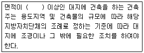
- 100m2
- 150m2
- 180m2
- 200m2
(정답률: 79%)
90. 용도지역의 건폐율기준으로 옳지 않은 것은?
- 농림지역 : 20% 이하
- 준주거지역 : 70% 이하
- 일반상업지역 : 80% 이하
- 제1종일반주거지역 : 70% 이하
(정답률: 40%)
91. 건축물을 특별시나 광역시에 건축하는 경우 특별시장 또는 광역시장의 허가를 받아야 하는 건축물의 층수 기준은?
- 15층 이상
- 21층 이상
- 30층 이상
- 41층 이상
(정답률: 79%)
92. 노외주차장의 출구와 입구를 따로 설치해야 하는 주차대수 규모의 기준은?(단, 출입구의 너비의 합이 5.5m 미만인 경우)
- 200대를 초과하는 규모
- 300대를 초과하는 규모
- 400대를 초과하는 규모
- 500대를 초과하는 규모
(정답률: 53%)
93. 다음은 옥상광장 등의 설치에 관한 기준 내용이다. ( ) 안에 알맞은 것은?
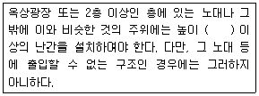
- 0.9m
- 1.2m
- 1.5m
- 1.8m
(정답률: 70%)
94. 공작물을 축조할 때 특별자치도지사 또는 시장ᆞ군수ᆞ구청장에게 신고를 하여야 하는 대상 공작물에 속하는 것은?(단, 공작물의 높이가 5m인 경우)
- 장식탑
- 광고탑
- 기념탑
- 굴뚝
(정답률: 71%)
95. 연면적이 5,000m2 이상인 건축물로서, 건축물의 대지에 공개 공지 또는 공개공간을 확보하여야 하는 대상 건축물에 속하지 않는 것은?(단, 건축조례로 정하는 건축물은 제외)
- 숙박시설
- 업무시설
- 위락시설
- 문화 및 집회시설
(정답률: 46%)
96. 건축법령상 공동주택에 속하는 것은?
- 공관
- 다중주택
- 다가구주택
- 다세대주택
(정답률: 68%)
97. 다음은 사용승인신청과 관련된 기준 내용이다. ( ) 안에 알맞은 것은?
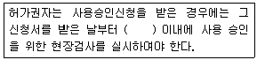
- 3일
- 5일
- 7일
- 10일
(정답률: 73%)
98. 그림과 같은 대지의 A점에서 건축할 수 있는 건축물의 최고층수는?(단, 건축물의 층고는 3m이다.)(오류 신고가 접수된 문제입니다. 반드시 정답과 해설을 확인하시기 바랍니다.)
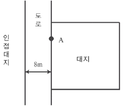
- 3층
- 4층
- 5층
- 6층
(정답률: 65%)
99. 다음은 노외주차장의 구조, 설비기준 내용이다. ( ) 안에 알맞은 것은?
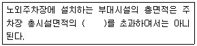
- 5%
- 10%
- 15%
- 20%
(정답률: 62%)
100. 다음 중 용도변경 시 신고를 하여야 하는 경우에 속하는 것은?
- 공동주택에서 위락시설로 용도변경하는 경우
- 의료시설에서 문화 및 집회시설로 용도변경하는 경우
- 숙박시설에서 문화 및 집회시설로 용도변경하는 경우
- 제1종근린생활시설에서 업무시설로 용도변경하는 경우
(정답률: 47%)